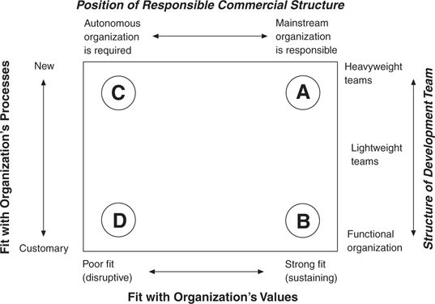

The third mechanism for new capability creation—spawning them within spin-out ventures—is currently en vogue among many managers as they wrestle with how to address the Internet. When are spin-outs a crucial step in building new capabilities to exploit change, and what are the guidelines by which they should be managed? A separate organization is required when the mainstream organization’s values would render it incapable of focusing resources on the innovation project. Large organizations cannot be expected to allocate freely the critical financial and human resources needed to build a strong position in small, emerging markets. And it is very difficult for a company whose cost structure is tailored to compete in high-end markets to be profitable in low-end markets as well. When a threatening disruptive technology requires a different cost structure in order to be profitable and competitive, or when the current size of the opportunity is insignificant relative to the growth needs of the mainstream organization, then—and only then—is a spin-out organization a required part of the solution.
How separate does the effort need to be? The primary requirement is that the project cannot be forced to compete with projects in the mainstream organization for resources. Because values are the criteria by which prioritization decisions are made, projects that are inconsistent with a company’s mainstream values will naturally be accorded lowest priority. Whether the independent organization is physically separate is less important than is its independence from the normal resource allocation process.
In our studies of this challenge, we have never seen a company succeed in addressing a change that disrupts its mainstream values absent the personal, attentive oversight of the CEO—precisely because of the power of processes and values and particularly the logic of the normal resource allocation process. Only the CEO can ensure that the new organization gets the required resources and is free to create processes and values that are appropriate to the new challenge. CEOs who view spin-outs as a tool to get disruptive threats off of their personal agendas are almost certain to meet with failure. We have seen no exceptions to this rule.
The framework summarized in Figure 8.1 can help managers exploit the capabilities that reside in their current processes and values when that is possible, and to create new ones, when the present organization is incapable. The left axis in Figure 8.1 measures the extent to which the existing processes—the patterns of interaction, communication, coordination, and decision-making currently used in the organization—are the ones that will get the new job done effectively. If the answer is yes (toward the lower end of the scale), the project manager can exploit the organization’s existing processes and organizational structure to succeed. As depicted in the corresponding position on the right axis, functional or lightweight teams, as described by Clark and Wheelwright, 10 are useful structures for exploiting existing capabilities. In such teams, the role of the project manager is to facilitate and coordinate work that is largely done within functional organizations.
Figure 8.1 Fitting an Innovation’s Requirements with the Organization’s Capabilities

Note: The left and bottom axes reflect the questions the manager needs to ask about the existing situation. The notes at the right side represent the appropriate response to the situation on the left axis. The notes at the top represent the appropriate response to the manager’s answer to the bottom axis.
On the other hand, if the ways of getting work done and of decision-making in the mainstream business would impede rather than facilitate the work of the new team—because different people need to interact with different people about different subjects and with different timing than has habitually been necessary—then a heavyweight team structure is necessary. Heavyweight teams are tools to create new processes—new ways of working together that constitute new capabilities. In these teams, members do not simply represent the interests and skills of their function. They are charged to act like general managers, and reach decisions and make trade-offs for the good of the project. They typically are dedicated and colocated.
The horizontal axis of Figure 8.1 asks managers to assess whether the organization’s values will allocate to the new initiative the resources it will need in order to become successful. If there is a poor, disruptive fit, then the mainstream organization’s values will accord low priority to the project. Therefore, setting up an autonomous organization within which development and commercialization can occur will be absolutely essential to success. At the other extreme, however, if there is a strong, sustaining fit, then the manager can expect that the energy and resources of the mainstream organization will coalesce behind it. There is no reason for a skunk works or a spin-out in such cases.
Region A in Figure 8.1 depicts a situation in which a manager is faced with a breakthrough but sustaining technological change—it fits the organization’s values. But it presents the organization with different types of problems to solve and therefore requires new types of interaction and coordination among groups and individuals. The manager needs a heavyweight development team to tackle the new task, but the project can be executed within the mainstream company. This is how Chrysler, Eli Lilly, and Medtronic accelerated their product development cycles so dramatically. 11 Heavyweight teams are the organizational mechanism that the managers of IBM’s disk drive division used to learn how to integrate components more effectively in their product designs, in order to wring 50 percent higher performance out of the components they used. Microsoft’s project to develop and launch its Internet browser was located in the Region A corner of this framework. It represented an extraordinary, difficult managerial achievement that required different people to work together in patterns different than any ever used before within Microsoft. But it was a sustaining technology to the company. Its customers wanted the product, and it strengthened the company’s integral business model. There was, therefore, no need to spin the project out into a completely different organization.
When in Region B, where the project fits the company’s processes and values, a lightweight development team can be successful. In such teams coordination across functional boundaries occurs within the mainstream organization.
Region C denotes an area in which a manager is faced with a disruptive technological change that doesn’t fit the organization’s existing processes and values. To ensure success in such instances, managers should create an autonomous organization and commission a heavyweight development team to tackle the challenge. In addition to the examples cited in chapters 5, 6, and 7, many companies’ efforts to address the distribution channel conflicts created by the Internet should be managed in this manner. In 1999 Compaq Computer, for example, launched a business to market its computers direct to customers over the Internet, so that it could compete more effectively with Dell Computer. Within a few weeks its retailers had protested so loudly that Compaq had to back away from the strategy. This was very disruptive to the values, or profit model, of the company and its retailers. The only way it could manage this conflict would be to launch the direct business through an independent company. It might even need a different brand in order to manage the tension.
Some have suggested that Wal-Mart’s strategy of managing its on-line retailing operation through an independent organization in Silicon Valley is foolhardy, because the spin-out organization can’t leverage Wal-Mart’s extraordinary logistics management processes and infrastructure. I believe the spin-out was wise, however, based upon Figure 8.1. The on-line venture actually needs very different logistics processes than those of its bricks-and-mortar operations. Those operations transport goods by the truck-load. On-line retailers need to pick individual items from inventory and ship small packages to diverse locations. The venture is not only disruptive to Wal-Mart’s values, but it needs to create its own logistics processes as well. It needed to be spun out separately.
Region D typifies projects in which products or services similar to those in the mainstream need to be sold within a fundamentally lower overhead cost business model. Wal-Mart’s Sam’s Clubs would fit in this region. These, in fact, can leverage similar logistics management processes as the main company; but budgeting, management, and P&L responsibility needs to be different.
Functional and lightweight teams are appropriate vehicles for exploiting established capabilities, whereas heavyweight teams are tools for creating new ones. Spin-out organizations, similarly, are tools for forging new values. Unfortunately, most companies employ a one-size-fits-all organizing strategy, using lightweight teams for programs of every size and character. Among those few firms that have accepted the “heavyweight gospel,” many have attempted to organize all of their development teams in a heavyweight fashion. Ideally, each company should tailor the team structure and organizational location to the process and values required by each project.
In many ways, the disruptive technologies model is a theory of relativity, because what is disruptive to one company might have a sustaining impact on another. For example, Dell Computer began by selling computers over the telephone. For Dell, the initiative to begin selling and accepting orders over the Internet was a sustaining innovation. It helped it make more money in the way it was already structured. For Compaq, Hewlett-Packard, and IBM, however, marketing direct to customers over the Internet would have a powerfully disruptive impact. The same is true in stock brokerage. For discount brokers such as Ameritrade and Charles Schwab, which accepted most of their orders by telephone, trading securities on-line simply helped them discount more cost-effectively—and even offer enhanced service relative to their former capabilities. For full-service firms with commissioned brokers such as Merrill Lynch, however, on-line trading represents a powerful disruptive threat.